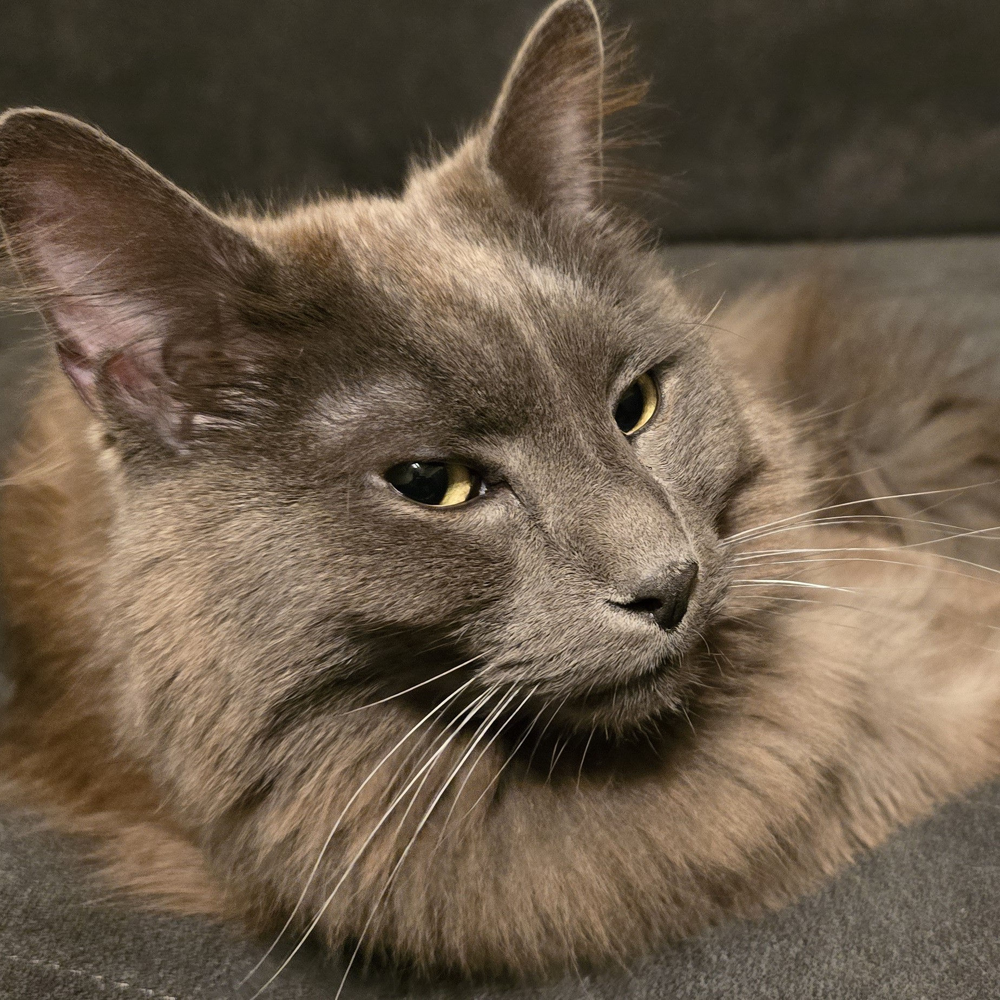
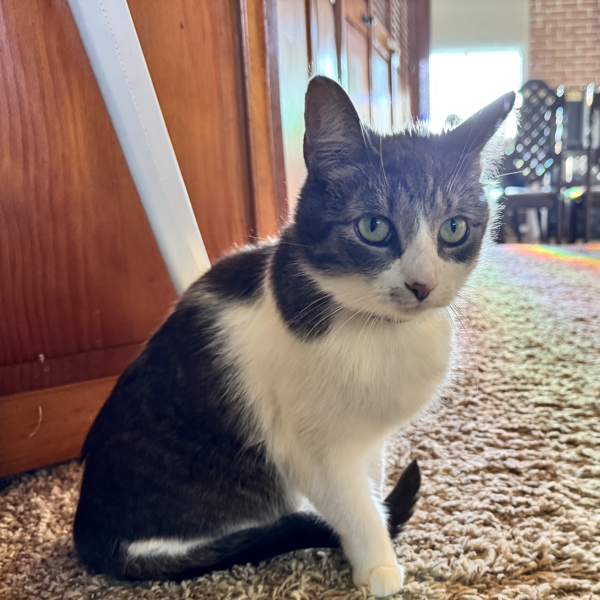

The Rest of Me
I'm Ken, a Scottish-born data scientist with a Ph.D. in AI, now living in the United States. My research background is in niche areas of artificial intelligence, and I care deeply about ethical AI and environmental sustainability in computing. If you're here for the professional side, head over to Data Science. This page is everything else.
Pets
The household includes Brutey, a brindle pup I brought over from Scotland, four cats (Kwee, Chaos, Yoyo, and Nila), plus a small flock of chickens. They're not pets, really; they're family. Most of my photography ends up being of them, and I wouldn't have it any other way. (The cat photos below are the only images on this site I didn't take myself.)

Brutey 🐕

Kwee

Chaos

Yoyo
Nila

The Flock 🐔
Hobbies & Interests
Music
I've played guitar since I was about 11, though I still can't tell you what key I'm in. These days it's mostly fingerstyle, learning covers from players like Andy McKee and Antoine Dufour. I'd like to start writing my own music at some point. I've also been tracking my listening on Last.fm since 2014. The top artists are a mess: Ludovico Einaudi, Alkaline Trio, Jeremy Soule, Rammstein. Make of that what you will.
Listening stats →Language
I'm learning Tamil. Very slowly. Learning a new language, in Tamil script at that, it's not easy when your only context is latin script. It's exciting to learn this beautiful language and its rich cultural heritage.
Cooking
I'm vegan and I cook with a mix of South Asian and Scottish influence. Lots of dals, soups, stews, kale salads. I batch-cook most things and enjoy healthy, tasty and batch-able meals most of all. That way I can enjoy good food without spending every day in the kitchen. Except when I burn things then I have to eat it for a week.
Writing
I'm working on my writing skills. Focusing on blogging just now, but I have a lot of ideas for fiction books that I hope to develop in the future.


Homelab & Tech
I run a self-hosted media setup I call KenPlex: Plex plus about 20 Dockerized services handling automation, transcoding, metadata, and monitoring. The music library alone is around 230,000 tracks, managed with beets and Mp3tag. I've written PowerShell and Python scripts for bulk audiobook conversion to .m4b, automated cover art lookups, and various other things that probably didn't need automating but were fun to build. More of my projects are on GitHub.
Gardening
I keep a small garden with very little success. Tomatoes, potatoes, strawberries, and an optimism that consistently outperforms my actual gains. The dream is to grow enough food to feed the household and maybe some neighbours, but we're not there yet.